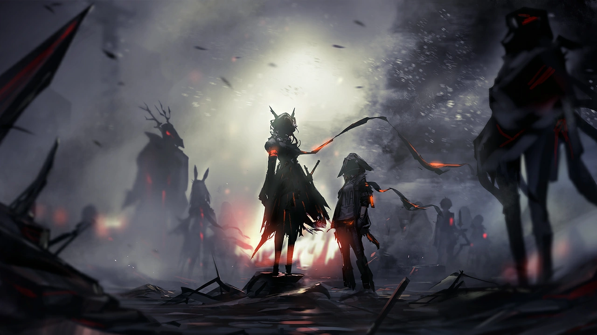

Bienvenue à Terra

Bienvenue sur Terra, un monde où les habitants sont confrontés à des catastrophes naturelles très graves, causant des difficultés politiques et sociales
Arknights est un jeu de stratégie mobile de type tower defense, où le joueur incarne un docteur amnésique qui guide l'organisation Rhodes Island dans un monde dystopique ravagé par une épidémie. Le but est de recruter et déployer divers "Opérateurs," chacun ayant des compétences uniques, pour défendre des points stratégiques face à des ennemis variés. La direction artistique soignée et l’histoire captivante, mêlant politique et mystère
Terra est peuplé de personnages humanoïdes ayant des attributs d'animaux ou de créatures mythologique.
L'univers de arknights est très vaste, des groupes militaires et paramilitaires qui se font la guerre au déités annonciatrices d'apocalypse